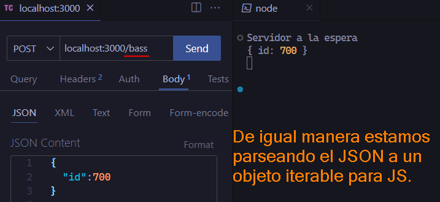

En Express, un middleware es una función que actúa como un intermediario entre una solicitud entrante y la respuesta que se enviará de vuelta al cliente. Esta función tiene acceso a objetos clave como la solicitud (req), que contiene información sobre lo que el cliente está solicitando, y la respuesta (res), que permite enviar una respuesta al cliente. Además, cada middleware tiene acceso a una función especial llamada next(), que es responsable de pasar el control al siguiente middleware en la cadena. Esto permite que los middlewares realicen diversas tareas como la autenticación, el registro de solicitudes, el análisis de datos y más, antes de que la solicitud finalmente llegue a su destino o se genere una respuesta para el cliente.
Los middleware se ejecutan de forma previa es decir antes de la lógica del end point o los end points, por ejemplo antes de ejecutar la logica del end point debemos mirar la base de datos, o hacer una autenticación.
Cuando se dice que un middleware se ejecuta previamente a un endpoint, significa que el programador ha colocado ese middleware antes de definir el endpoint en el flujo del código. En Express, los middlewares y las rutas (también conocidas como endpoints) se registran en el orden en que aparecen en el código. Por lo tanto, si colocas un middleware antes de definir una ruta específica, ese middleware se ejecutará antes de que la solicitud llegue a esa ruta. No es obligatorio pero si, en la mayoría de casos los middlwares se ponen en el flujo antes de los endpoints pero puede ser que haya casos donde un middleware se pude poner después de una ruta o al ultímo del código.
Los middlewares se utilizan para realizar tareas como la manipulación de la solicitud, la modificación de la respuesta y el control del flujo de la aplicación.
¿Cómo se usa un middleware en Express?
El método use()se utiliza para registrar middlewares en una aplicación de Express. Este método toma como argumento una función middleware que se ejecutará en cada solicitud entrante, independientemente de la ruta especificada. También puedes utilizar middlewares específicos de ruta, que solo se ejecutarán cuando una solicitud coincida con una ruta específica.
Middlewares globales
app.use(middleware) De esta manera el middleware afecta a todas las rutas de nuestra aplicación.
app.use((req, res, next) => {//Lógica middleware}) Esta es la forma más común de crear middlewares globales, podemos tener middlewares globales solo para afectar aquellas peticiones que nosotros explícitamentele indiquemos, por ejemplo afectar aquellos endpoints que sean solo POST por decir algo, siguen siendo globales ya que afectará a todas aquellas peticiones POST como en este siguiente ejemplo.
Middleware global que afecta a todas las peticiones POST
app.use('/laptops',(req, res, next) => {//Lógica middleware}) Estamos creando un middleware que será ejecutado para cualquier solicitud que coincida con la ruta especificada, en este caso, cualquier solicitud que comience con /laptops. Esto significa que el middleware se ejecutará para cualquier ruta que comience con /laptops, como /laptops, /laptops/acer, /laptops/dell, etc.
Entonces, en este caso, el middleware no es global en el sentido de que se aplique a todas las solicitudes, pero es global en el sentido de que se aplica a todas las solicitudes que coincidan con la ruta especificada.
Resultado
Middlewares específicos
app.get('/ruta', callbackMiddleware ,(req,res)=>{})De esta manera el middleware solo afecta a la ruta especificada
¿Por qué se utiliza el método next() en los middlewares?
El método next() es esencial en Express para pasar el control al siguiente middleware en la cadena de middlewares o a la ruta final en el caso de que no haya más middlewares registrados.
En Express, los middlewares se ejecutan secuencialmente en el orden en que se registran. Después de que un middleware realiza su tarea, puede optar por pasar el control al siguiente middleware llamando a la función next(). Esto permite que cada middleware realice su función específica y luego permita que el siguiente middleware o la ruta final manejen la solicitud.
Algunos ejemplos de casos de uso
Middleware global
Como se habia mencionado podemos crear middlwares globales que afectarán a todos los end points de nuestra aplicacion, por ejemplo podemos tener un middleware global que parsee el body de la petición de JSON a un Objeto Literal JS ya que por ejemplo puede que nuestra aplicación siempre envie la info en formato JSON y es necesario parsearla para convertirla en un objeto para JS.
Pero hay que recordar que los middleware siempre se ejecutan en el orden en el que estan definidos.
Resultado con el end point guitars con el método PUT
Resultado con el end point bass con el método POST

Ejemplo de middleware específico con autorización
Este ejemplo es didáctico para darnos una idea de como se usan los middlewares un poco más complejos.
Uso de express.static(publicDirectoryPath) para enviar archivos estáticos
express.static es un middleware incorporado en Express que se utiliza para servir archivos estáticos, como HTML, imágenes, archivos CSS, archivos JavaScript, etc. Este middleware toma como argumento el directorio raíz desde el cual se servirán los archivos estáticos.
Para usar express.static, primero necesitamos especificar el directorio raíz que contiene nuestros archivos estáticos. Podemos hacerlo utilizando la función express.static y pasándole la ruta del directorio como parámetro.
Veamos una nota sobre express.static()
Cuando una solicitud de archivo estático se realiza a través del middleware express.static, si la ruta especificada en la solicitud no se encuentra en el directorio raíz especificado (publicDirectory en tu caso), Express responderá automáticamente con un error HTTP 404 (Not Found).
Esto significa que si intentamos acceder a un archivo que no existe en el directorio público, como /ruta/a/archivo_que_no_existe.css, Express detectará que el archivo no se encuentra en el directorio especificado y responderá automáticamente con una respuesta HTTP 404.
El middleware express.static está diseñado para manejar la lógica de servir archivos estáticos de manera eficiente y segura, pero no incluye automáticamente la lógica de manejo de errores para las rutas que no existen. En su lugar, delega el manejo de esas solicitudes al siguiente middleware en la cadena de middleware de Express.
Como ya vimos en la nota anterior no se incluye el manejo de la lógica de errores para las rutas que no existen, si deseamos personalizar la respuesta para las rutas que no se encuentran, podemos colocar un middleware de manejo de errores después del middleware express.static para manejar estos casos específicos, donde nosotros ya sabemos que el middleware express.static(publicDirectory) delega el manejo de los errores al siguiente middleware en la cadena de middlewares en el flujo de nuestro programa.
Cuando decimos que
express.static() no maneja los errores de las rutas que no existen y que debemos poner un middleware para manejar esos errores despues del express.static() puede ir justo después es decir si tenemos expres.static() en la línea 15 por ejemplo, el middleware de errores de rutas puede ir juestos después en la línea 16, pero también puede ir (después) no justo depués pero sí después, esto quiere decir que por ejemplo tenemos el express.static() en la línea 15 y el middleware de errores lo podemos tener en la linea 30 y antes podemos tener otras líneas de código pero sigue estando después, espero que se entienda.
Ahora que ya sabemos la nota anterior, veamos un ejemplo que parece correcto pero da un error.
Al ejecutar el código podemos ver que al ingresar al home(index.html) automáticamente nos devolverá la pagina 404 NOT FOUND, y se supone que nos deberia mostrar la página de inicio.
Explicación de error
Ahora, aquí está el problema: si el manejador de la ruta raíz / está definido después del middleware de manejo de errores, Express intentará primero pasar la solicitud al middleware de manejo de errores antes de verificar si la solicitud coincide con la ruta raíz. Esto significa que si la solicitud no coincide con una ruta estática, Express intentará pasarla al middleware de manejo de errores en lugar de al manejador de la ruta raíz. Como resultado, el manejador de la ruta raíz nunca se ejecutará, y la solicitud siempre terminará siendo manejada por el middleware de manejo de errores, lo que resultará en que siempre se envíe la página 404.
Solución al error
Para asegurar que el manejador de la ruta raíz / se ejecute antes de intentar pasar la solicitud al middleware de manejo de errores, debes colocar el manejador de la ruta raíz antes del middleware de manejo de errores en la secuencia de middleware. Esto garantiza que Express primero intente manejar las rutas dinámicas antes de intentar manejar las rutas de manejo de errores.
Código correcto
Ahora si visualiza el indexSi intentamos entrar a una pagina que no existe, ahora si muestra el 404 NOT FOUND
Es por eso que deciamos que el middleware de errores puede ir justo despues o muchos después.
Casos de uso comunes de middlewares en Express
Autenticación y autorización: Verificar las credenciales del usuario antes de permitir el acceso a ciertas rutas.
Registro de solicitudes: Registrar información sobre las solicitudes entrantes, como la hora, la ruta solicitada, etc.
Manejo de errores: Capturar y manejar errores en la aplicación.
Compresión: Comprimir las respuestas antes de enviarlas al cliente para mejorar el rendimiento.
Análisis de cuerpo de solicitud: Analizar y procesar el cuerpo de las solicitudes entrantes, por ejemplo, para el análisis de JSON o formularios.